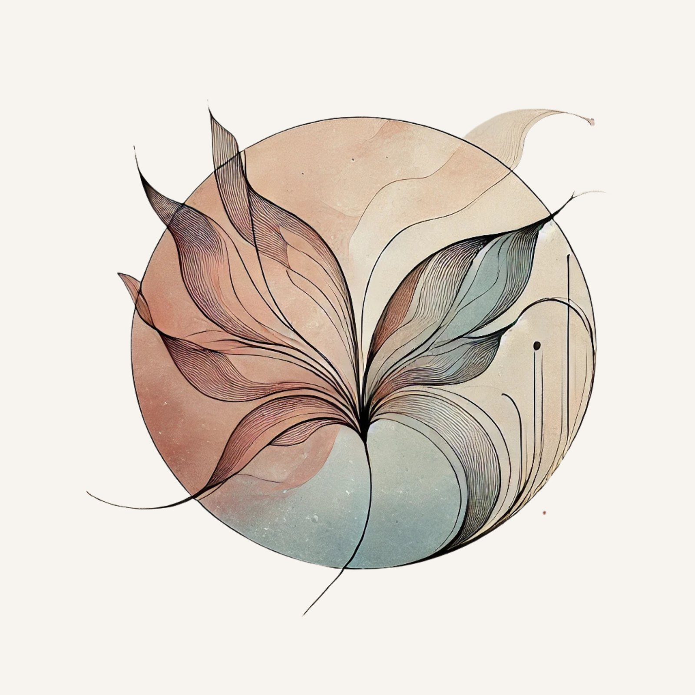
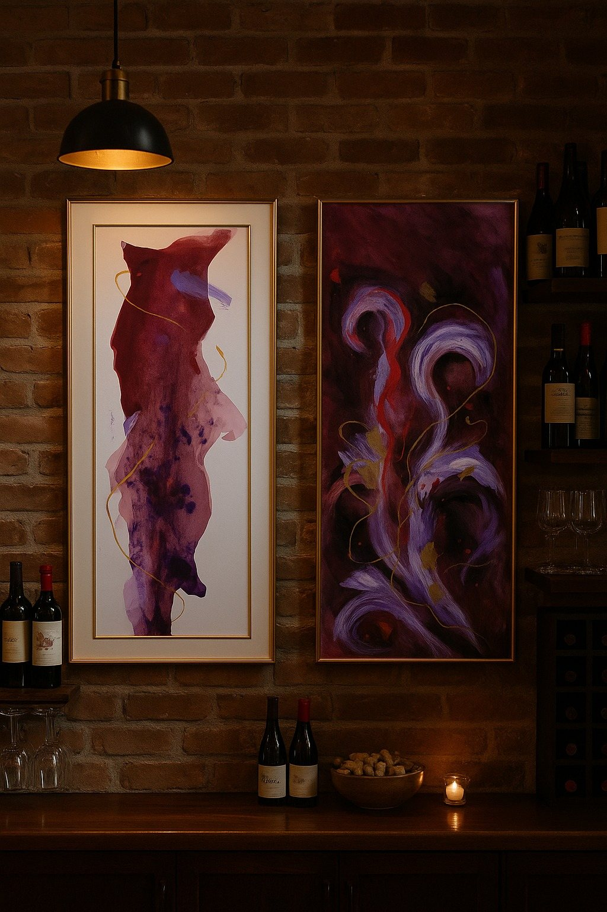
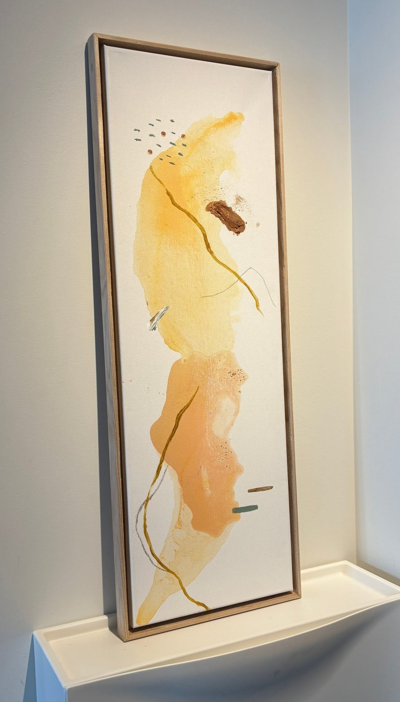
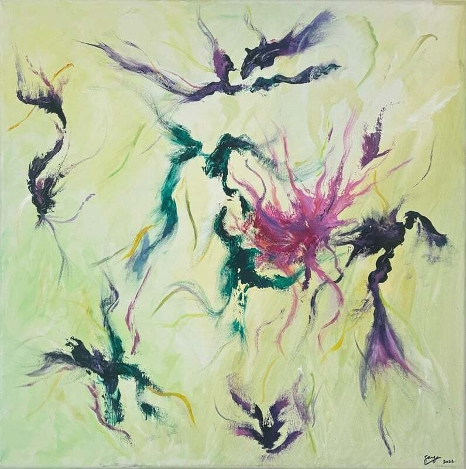
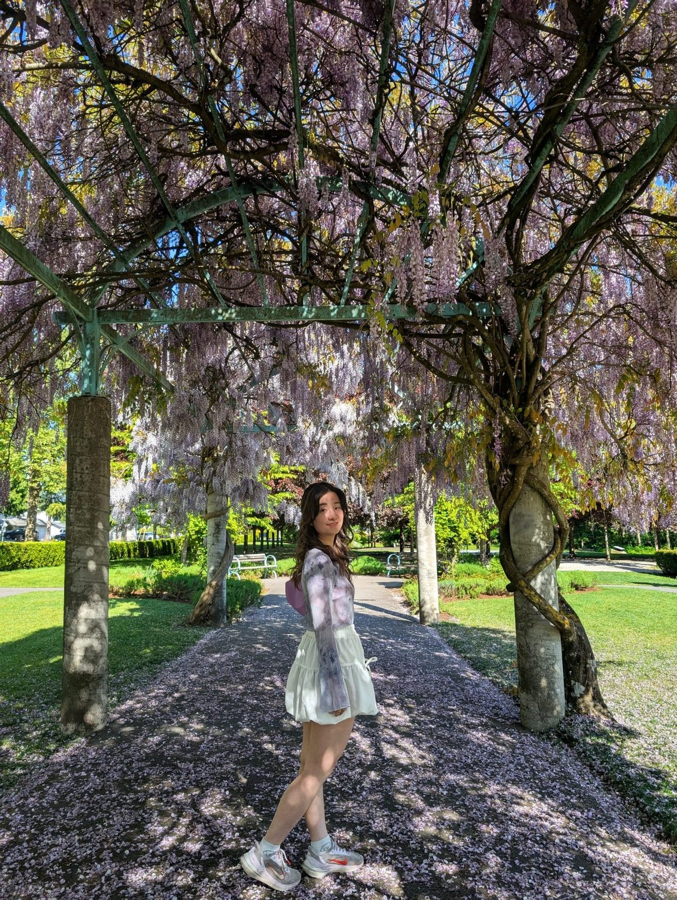
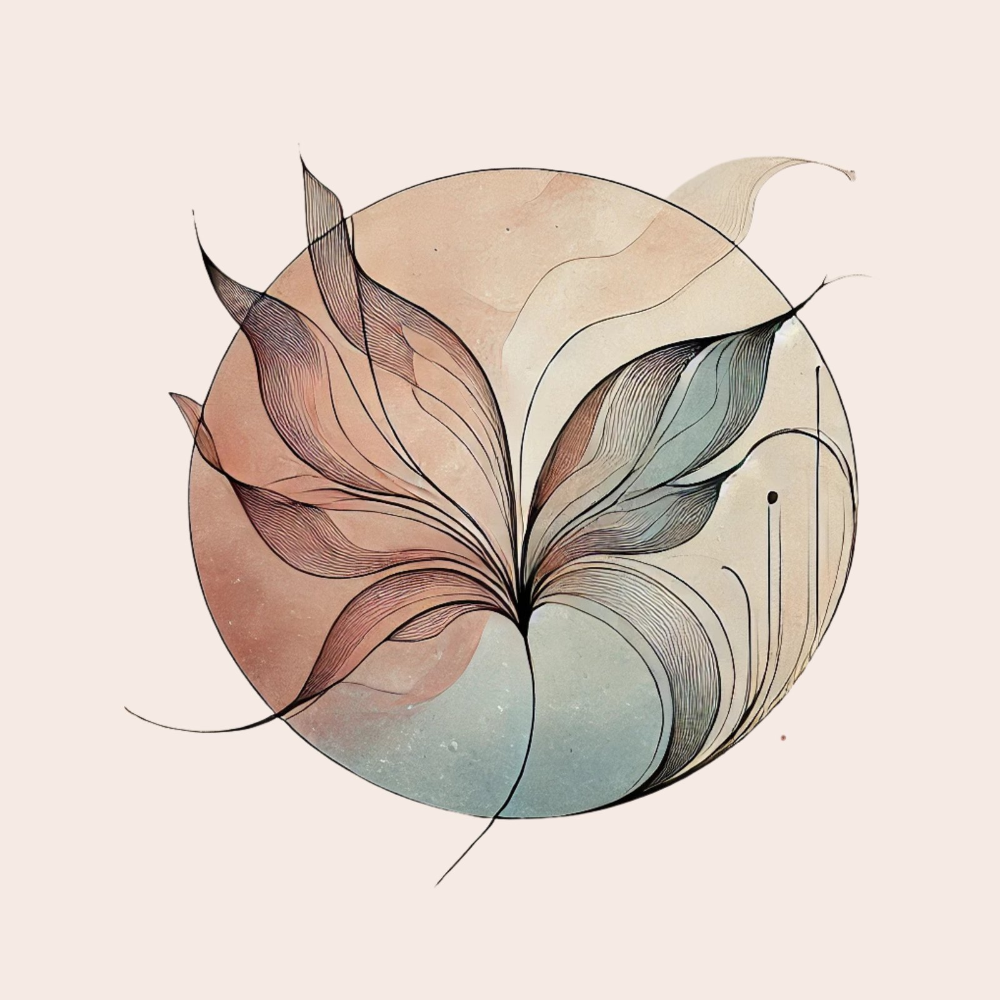

Work made to feel, work made to be clear
I’m Faye — an artist and poet, and a content strategist by day. Two practices, one thread: paying close attention.

Creative practice
Abstract painting, pottery, and movement — intuitive, layered, honest.
02 / WORDSfragments & echoes
A limited-release chapbook on heartbreak, home, and healing.
03 / DESKEditorial portfolio
Strategy, thought leadership, and B2B storytelling for people-first brands.




A curious multi-creative, learning along the way
I’m a content strategist and tech analyst who believes in meaningful work and the honest exploration of creativity. By day I work with editorial teams to create clear, search-friendly content that helps people grow their careers.
Outside of work I paint abstract art, make pottery, and write poetry — ways of exploring the subtler things words alone can’t hold. My creative practice lives between logic and intuition, weaving memory, emotion, and embodiment into form.
fragments
& echoes
A limited-release poetry chapbook exploring heartbreak, home, and healing across cities and life chapters.
